20+ New Year's Eve Dinner Ideas for Family and Friends
📌 Save to Pinterest
New Year's Eve dinner should feel special without keeping the host in the kitchen all night. This roundup gathers twenty dinner ideas for family and friends — showpiece roasts, slow cooker mains that cook while you set the table, golden baked pasta, and a few luxurious touches like lobster tails and seared scallops. Pick one showpiece, add a hands-off dish, and let the evening be about the people at the table, not the stove.
How to plan a New Year's Eve dinner
Build the menu around one centerpiece and two supporting dishes: a roast or Wellington for the table, a slow cooker main that needs no attention, and something quick — pasta or steak bites — for the last hour. Slow cooker recipes are the host's best friend on New Year's Eve, because they free up the oven and the evening. Serve family-style so everyone helps themselves, and keep the sides simple: roasted vegetables, a green salad, and good bread.
Good to know: Everything is written in American English, and measurements use US customary units — cups, tablespoons, and Fahrenheit — for cooks in the United States. Always follow safe food-handling guidance, and check labels for allergens when cooking for others.
Food safety: cook poultry to 165°F (74°C), ground sausage to 160°F (71°C), and whole cuts of beef and pork to 145°F (63°C) with a 3-minute rest. Cook fish to 145°F (63°C) and shellfish until opaque. Reheat cooked ham to 140°F (60°C). Check with a food thermometer.
Roasts & showpiece mains
The dishes that make the table feel like a celebration — a crusted prime rib, fall-apart short ribs, bright salmon and buttery shrimp pasta.
1. Herb Crusted Prime Rib Roast
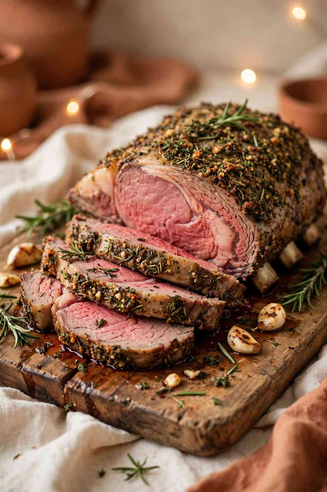
This showpiece roast is the centerpiece a New Year's Eve table deserves, with a crisp garlic-herb crust of rosemary and thyme over juicy, rosy beef. A hot blast in the oven sets the crust, then gentle heat cooks the inside evenly. Sliced thick at the table, it is rich, fragrant, and deeply celebratory.
Ingredients
- 1 bone-in prime rib roast (5 lbs)
- 4 garlic cloves
- 2 tbsp olive oil
- 2 tbsp chopped rosemary
- 1 tbsp thyme
- salt and pepper
Directions
- Preheat the oven to 450°F. Finely chop the garlic cloves and mix them in a small bowl with the olive oil, chopped rosemary, and thyme.
- Pat the prime rib roast dry with paper towels, then season it generously on all sides with salt and pepper.
- Rub the garlic-herb mixture evenly over the entire surface of the roast, pressing it into the meat so the crust sticks.
- Place the roast bone-side down in a roasting pan and roast at 450°F for 20 minutes, until the outside begins to brown and crisp.
- Reduce the oven temperature to 325°F and continue roasting for about 90 minutes, until a thermometer inserted into the thickest part reads 130°F inside.
- Transfer the roast to a carving board and rest it for 20 minutes before slicing, so the juices settle and the meat stays moist. Slice thick and serve warm.
2. Slow Cooker Beef Short Ribs
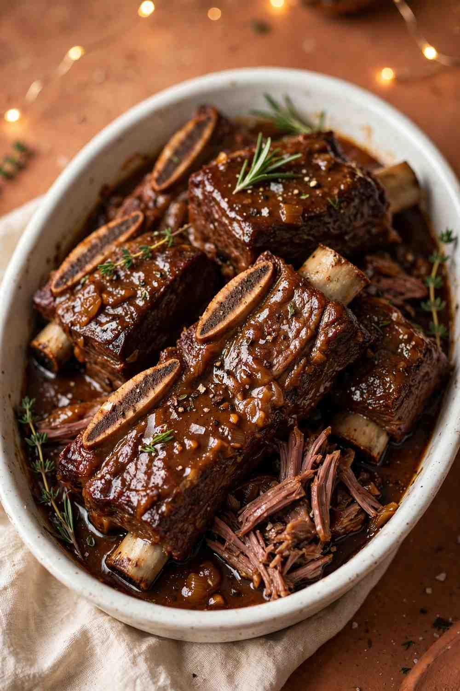
These short ribs cook low and slow until the meat falls off the bone, bathed in a rich sauce of beef broth, red wine, onions, garlic, and tomato paste. Rosemary adds a warm, woodsy note that makes the whole dish taste like a celebration. Serve the ribs with the glossy sauce spooned over the top.
Ingredients
- 4 lbs beef short ribs
- 2 cups beef broth
- 1 cup red wine
- 2 onions
- 4 garlic cloves
- 2 tbsp tomato paste
- 1 tbsp rosemary
Directions
- Season the short ribs with salt and pepper. Heat a large skillet over medium-high heat and brown the ribs on all sides, about 3 to 4 minutes per side, until deeply browned.
- Chop the onions and finely chop the garlic cloves while the ribs brown.
- Pour the beef broth and red wine into a slow cooker, then stir in the chopped onions, garlic, tomato paste, and rosemary until combined.
- Nestle the browned ribs into the liquid in a single layer, turning them once so they are coated with the sauce.
- Cover the slow cooker and cook on low for 8 hours, until the meat is fall-apart tender and pulls easily from the bone.
- Lift the ribs out carefully with tongs, spoon the rich sauce over them, and serve warm.
Food safety: cook the beef to at least 145°F (63°C) — short ribs are done when tender.
3. Baked Salmon with Lemon Butter Sauce
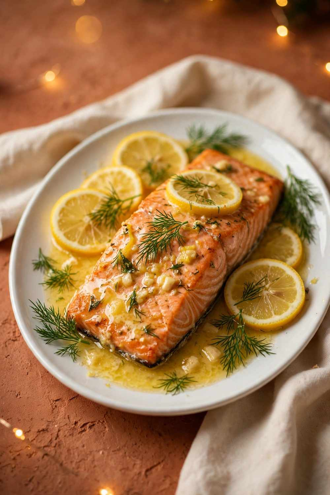
This salmon bakes into tender, flaky fillets under a bright lemon butter sauce, with garlic for warmth and fresh dill for a clean, herbal finish. It looks elegant on a platter, cooks in just fifteen minutes, and tastes light yet rich. It is the kind of main that feels special without keeping the cook away from the party.
Ingredients
- 2 lbs salmon fillet
- 4 tbsp butter
- 2 garlic cloves
- juice of 1 lemon
- 1 tbsp chopped dill
- salt and pepper
Directions
- Preheat the oven to 400°F. Place the salmon fillet in a baking dish, skin-side down if it has skin, and season it generously with salt and pepper.
- Finely chop the garlic cloves and squeeze the juice from the lemon into a small bowl.
- Melt the butter in a small saucepan over medium heat, then add the chopped garlic and cook for about 1 minute, until fragrant but not browned.
- Stir the lemon juice into the melted garlic butter and remove the pan from the heat.
- Pour the lemon butter evenly over the salmon in the baking dish, letting it pool around the fillet.
- Bake at 400°F for 15 minutes, until the salmon is opaque and flakes easily with a fork.
- Sprinkle the chopped dill over the top and serve at once, spooning the warm lemon butter sauce from the dish over each portion.
Food safety: cook the salmon to 145°F (63°C), or until the flesh is opaque and flakes easily.
4. Shrimp Scampi Pasta with Lemon
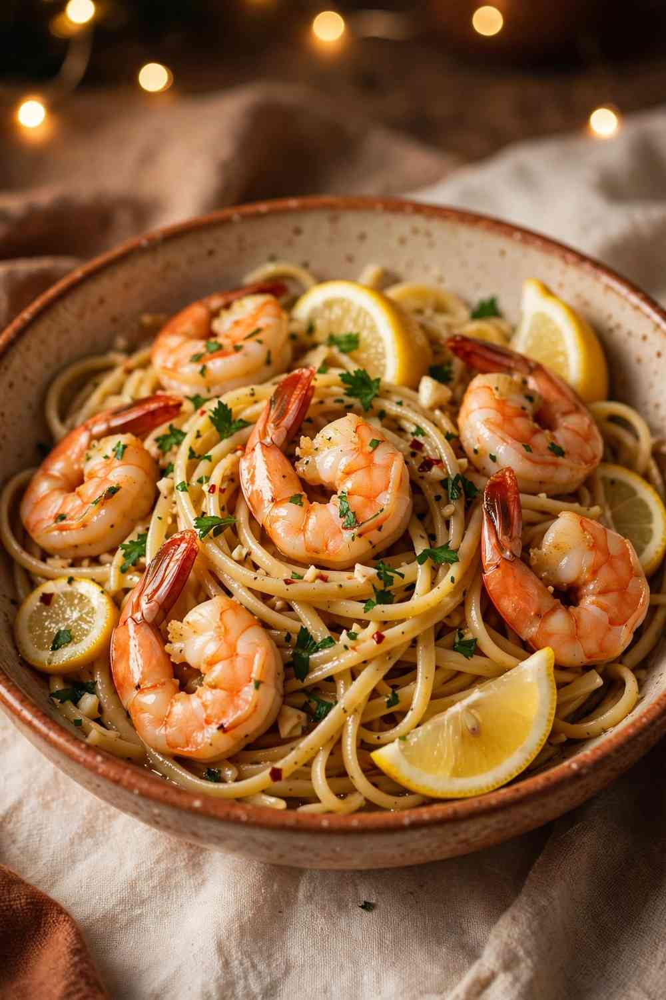
Buttery shrimp and linguine come together in a bright garlic and white wine sauce, finished with fresh lemon juice and parsley. The shrimp stay plump and tender, the pasta soaks up the sauce, and every bite tastes fresh, rich, and a little luxurious. It is fast enough for the last hour before midnight.
Ingredients
- 1 lb shrimp
- 12 oz linguine
- 4 tbsp butter
- 4 garlic cloves
- 1/2 cup white wine
- juice of 1 lemon
- 1/4 cup chopped parsley
Directions
- Bring a large pot of salted water to a boil and cook the linguine until al dente, about 9 to 11 minutes. Drain and set aside.
- While the pasta cooks, finely chop the garlic and squeeze the juice from the lemon.
- Melt the butter in a large skillet over medium-high heat, then add the garlic and cook for about 30 seconds, until fragrant.
- Add the shrimp in a single layer and sauté for 3 minutes per side, until they turn pink and curl.
- Pour in the white wine and lemon juice and simmer for 1 to 2 minutes, letting the sauce bubble and reduce slightly.
- Add the drained linguine and toss for 1 minute, until the pasta is coated in the sauce.
- Sprinkle with the chopped parsley, toss once more, and serve warm in wide bowls.
Food safety: cook the shrimp until the flesh is pearly and opaque.
5. Chicken Marsala with Mushrooms

Golden chicken breasts simmer in a rich Marsala wine sauce with sliced mushrooms, garlic, and chicken broth, all finished with butter for a silky sheen. The sauce is savory and slightly sweet, the chicken stays juicy, and the mushrooms soak up every drop. Serve it straight from the skillet for a warm, restaurant-style New Year's main.
Ingredients
- 4 chicken breasts
- 1 cup flour
- 8 oz mushrooms
- 1 cup Marsala wine
- 1 cup chicken broth
- 2 tbsp butter
- 2 garlic cloves
Directions
- Slice the mushrooms and finely chop the garlic. Spread the flour on a plate for dredging.
- Pat the chicken breasts dry, then dredge each one lightly in the flour, shaking off the excess.
- Melt the butter in a large skillet over medium-high heat. Add the chicken and brown for 4 to 5 minutes per side, until golden. Remove to a plate.
- Add the mushrooms and garlic to the same pan and sauté for 4 to 5 minutes, until the mushrooms soften and brown.
- Pour in the Marsala wine and chicken broth, scraping up the browned bits as the sauce comes to a simmer.
- Return the chicken to the pan, reduce the heat to medium-low, and simmer for 10 minutes, until the chicken is cooked through and the sauce thickens slightly.
- Spoon the mushroom Marsala sauce over the chicken and serve warm.
Food safety: cook the chicken to 165°F (74°C) — check with a food thermometer.
Slow cooker & baked mains
Hands-off mains and golden baked dishes — the slow cooker does the work while you enjoy the evening, and the oven finishes the rest.
6. Slow Cooker Beef Stroganoff

Tender beef stew meat, onions, and mushrooms cook slowly in beef broth until meltingly soft, then the sauce turns creamy with sour cream. Served over buttery egg noodles, it is warm, comforting, and deeply savory, the kind of dish guests go back for. The slow cooker does nearly all of the work.
Ingredients
- 2 lbs beef stew meat
- 1 onion
- 8 oz mushrooms
- 2 cups beef broth
- 1 cup sour cream
- 2 tbsp flour
- 12 oz egg noodles
Directions
- Chop the onion and slice the mushrooms. Add the beef stew meat, chopped onion, sliced mushrooms, and beef broth to a slow cooker.
- Stir everything together so the beef and vegetables are covered by the broth.
- Cover the slow cooker and cook on low for 6 hours, until the beef is very tender and easily pierced with a fork.
- In a small bowl, whisk the sour cream with the flour until smooth and no lumps remain.
- Stir the sour cream mixture into the slow cooker, mixing well so the sauce turns creamy and even.
- Cover and cook for 20 more minutes, until the sauce is hot and slightly thickened.
- While the sauce finishes, cook the egg noodles according to the package directions and drain them. Serve the stroganoff spooned over the warm egg noodles.
Food safety: cook the beef to 145°F (63°C).
7. Roasted Pork Tenderloin with Cranberry Glaze
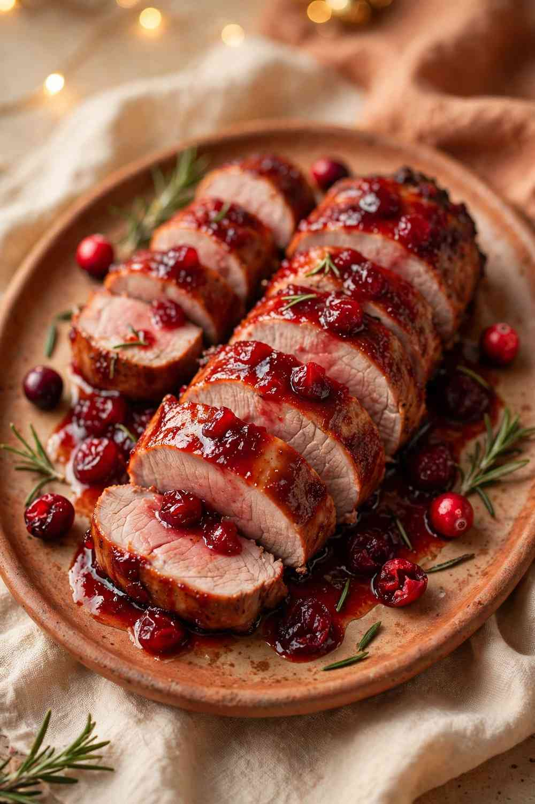
Juicy pork tenderloin roasts with garlic and rosemary, then gets brushed with a glossy cranberry glaze sweetened with honey and sharpened with Dijon mustard. The glaze turns sticky and bright red in the oven, and the sliced medallions look festive on a platter. It is sweet, savory, and perfectly seasonal.
Ingredients
- 2 pork tenderloins
- 1 cup cranberry sauce
- 2 tbsp honey
- 1 tbsp Dijon mustard
- 2 garlic cloves
- 1 tsp rosemary
Directions
- Preheat the oven to 400°F. Finely chop the garlic cloves and mix them with the rosemary, salt, and pepper.
- Pat the pork tenderloins dry with paper towels, then rub them all over with the garlic, rosemary, salt, and pepper mixture.
- Place the tenderloins in a roasting pan or on a rimmed baking sheet, leaving space between them so they roast evenly.
- Roast at 400°F for 25 minutes, until the pork is lightly browned on the outside and nearly cooked through.
- While the pork roasts, stir together the cranberry sauce, honey, and Dijon mustard in a small bowl until smooth.
- Brush the cranberry mixture generously over the tenderloins and roast for 5 more minutes, until the glaze is glossy and set.
- Let the pork rest for 3 minutes, then slice it into medallions and serve with any extra glaze spooned over the top.
Food safety: cook the pork to 145°F (63°C) and let it rest for 3 minutes before slicing.
8. Baked Ziti with Italian Sausage
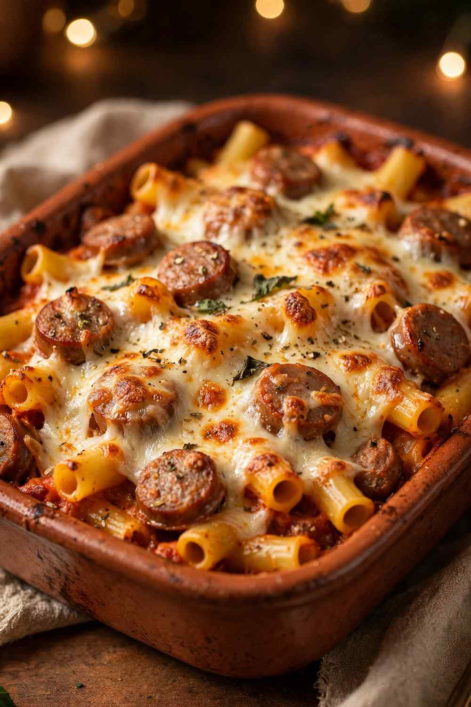
This cheesy baked pasta is made for a crowd, with tender ziti, browned Italian sausage, marinara, and creamy ricotta under a blanket of melted mozzarella and Parmesan. It bakes until bubbling and golden at the edges, then slices into generous, hearty portions. It is warm, filling, and always the first dish to disappear.
Ingredients
- 1 lb ziti
- 1 lb Italian sausage
- 1 jar (24 oz) marinara sauce
- 15 oz ricotta
- 2 cups shredded mozzarella
- 1/2 cup Parmesan
Directions
- Preheat the oven to 375°F and grease a 9x13-inch baking dish.
- Bring a large pot of salted water to a boil and cook the ziti until just al dente, about 8 to 9 minutes. Drain and set aside.
- Brown the Italian sausage in a large skillet over medium-high heat, breaking it into crumbles, for 7 to 8 minutes, until cooked through. Drain off excess fat.
- In a large bowl, mix the cooked ziti, browned sausage, marinara sauce, and ricotta until evenly combined.
- Pour the mixture into the greased baking dish and spread it into an even layer.
- Top evenly with the shredded mozzarella and Parmesan.
- Bake at 375°F for 30 minutes, until the cheese is melted, golden, and bubbling. Rest for 5 minutes before serving.
Food safety: cook the sausage to 160°F (71°C) — check with a food thermometer.
9. Creamy Tuscan Chicken
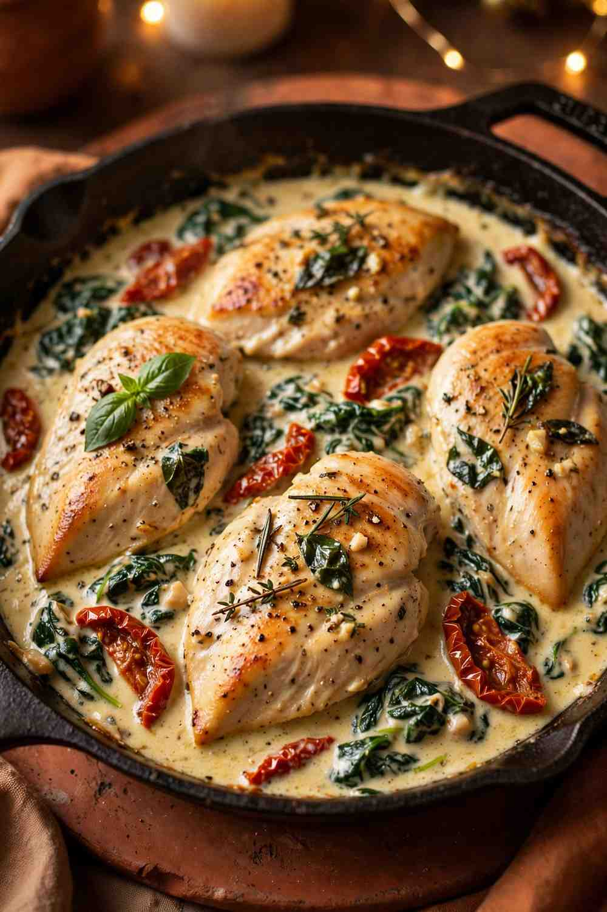
Golden chicken breasts rest in a rich cream sauce with sun-dried tomatoes, wilted spinach, garlic, and Parmesan. The sauce is silky and savory, the tomatoes add a sweet-tart bite, and the spinach turns soft and bright. It looks beautiful in the skillet and tastes like a cozy, restaurant-style celebration dinner.
Ingredients
- 4 chicken breasts
- 1 cup heavy cream
- 1/2 cup sun-dried tomatoes
- 2 cups spinach
- 3 garlic cloves
- 1/2 cup Parmesan
Directions
- Finely chop the garlic and slice the sun-dried tomatoes if whole. Pat the chicken breasts dry.
- Heat a large skillet over medium-high heat and brown the chicken for 4 to 5 minutes per side, until golden. Remove to a plate.
- Reduce the heat to medium and add the garlic to the same pan. Cook for about 30 seconds, until fragrant.
- Pour in the heavy cream and add the sun-dried tomatoes and Parmesan, stirring until the cheese melts and the sauce is smooth.
- Add the spinach a handful at a time, stirring until each handful wilts, about 2 to 3 minutes in total.
- Return the chicken to the skillet, nestling it into the sauce, and simmer for 10 minutes, until cooked through and the sauce thickens slightly.
- Spoon the sauce and spinach over the chicken and serve warm from the skillet.
Food safety: cook the chicken to 165°F (74°C) — check with a food thermometer.
10. Classic Beef Wellington
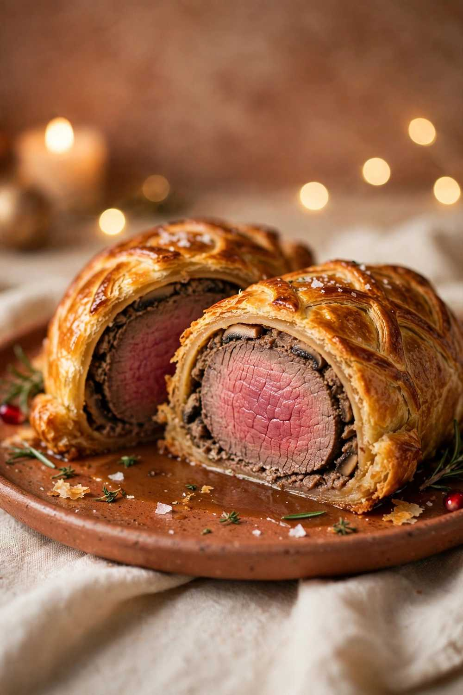
A whole beef tenderloin, seared and brushed with Dijon mustard, is wrapped in mushroom duxelles, prosciutto, and golden puff pastry. Sliced open, it reveals a rosy center inside crisp, flaky layers. It is the grandest main on this list, made for the moment everyone gathers at the table.
Ingredients
- 2 lbs beef tenderloin
- 8 oz mushrooms
- 1 sheet puff pastry
- 2 tbsp Dijon mustard
- 4 slices prosciutto
- 1 egg for wash
Directions
- Finely chop the mushrooms. Cook them in a dry skillet over medium-high heat for 8 to 10 minutes, stirring often, until dry and thick. Let it cool.
- Preheat the oven to 400°F. Sear the tenderloin in a hot skillet for 2 to 3 minutes per side, until browned.
- Brush the warm tenderloin with the Dijon mustard and let it cool.
- Lay the prosciutto slices in a slightly overlapping row on plastic wrap. Spread the cooled duxelles over the prosciutto.
- Place the tenderloin at one edge and roll it up tightly in the prosciutto and mushroom layer, then wrap it in the puff pastry, sealing the edges.
- Place the Wellington seam-side down on a baking sheet. Beat the egg and brush it over the pastry.
- Bake at 400°F for 30 minutes, until puffed and golden. Rest 3 minutes before slicing.
Food safety: cook the beef to 145°F (63°C) and let it rest for 3 minutes before slicing.

Chicken, seafood & a vegetarian main
Golden roast chicken, a sweet glazed ham, restaurant-style scallops and lobster — plus a hearty stuffed squash for the vegetarians at the table.
11. Honey Glazed Ham with Pineapple
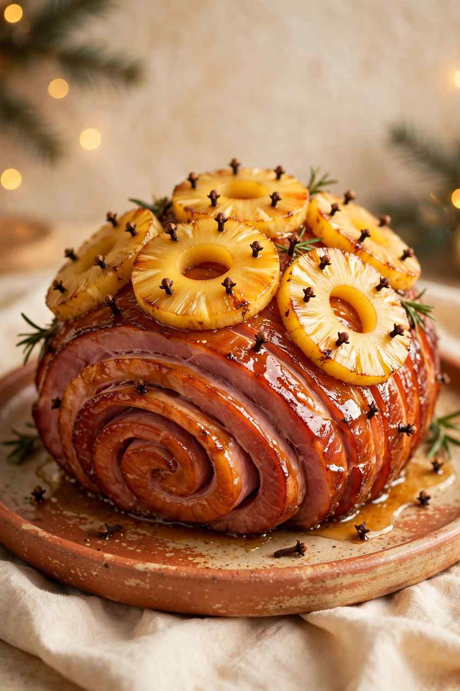
A spiral ham bakes under a sweet glaze of brown sugar, honey, and Dijon mustard, studded with cloves and topped with golden pineapple rings. The glaze caramelizes in the oven, the pineapple turns juicy and warm, and the slices stay moist and tender. It is a joyful, old-fashioned centerpiece for a New Year's table.
Ingredients
- 1 spiral ham (7 lbs)
- 1 cup brown sugar
- 1/2 cup honey
- 1 can pineapple rings
- 1 tbsp Dijon mustard
- whole cloves
Directions
- Preheat the oven to 325°F. Place the spiral ham cut-side down in a roasting pan.
- Score the surface of the ham in a diamond pattern with a sharp knife, cutting just through the outer layer.
- Stud the ham with whole cloves, pressing one clove into the center of each diamond.
- In a small bowl, mix the brown sugar, honey, and Dijon mustard until smooth and spreadable.
- Brush the mixture generously over the entire surface of the ham, working it into the scored cuts.
- Arrange the pineapple rings over the top of the ham, securing them in place if needed.
- Bake at 325°F for 90 minutes, basting the ham twice with the pan juices during baking, until the glaze is sticky and caramelized and the ham is heated through. Let it rest for 10 minutes before slicing.
Food safety: reheat the cooked ham to 140°F (60°C).
12. Lemon Herb Roast Chicken
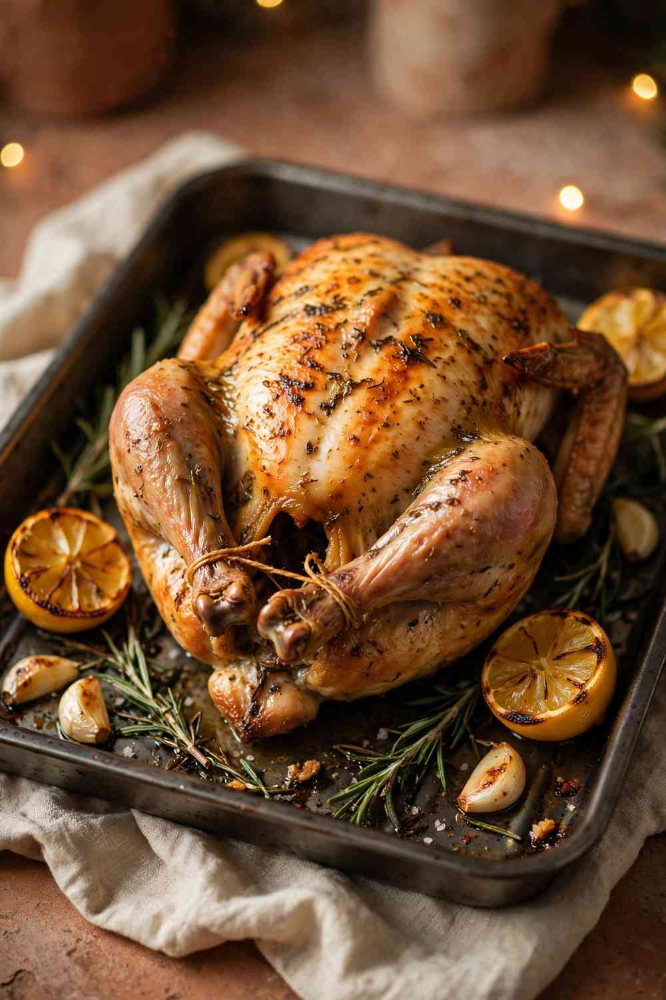
A whole chicken roasts with olive oil, garlic, rosemary, and thyme until the skin turns deep golden and crisp and the meat stays juicy. Lemon halves tucked inside the cavity steam gently, perfuming the chicken from within. It is simple, beautiful, and the kind of roast everyone reaches for.
Ingredients
- 1 whole chicken (4 lbs)
- 1 lemon
- 4 garlic cloves
- 2 tbsp olive oil
- 1 tbsp rosemary
- 1 tsp thyme
Directions
- Preheat the oven to 425°F. Finely chop the garlic and mix it with the olive oil, rosemary, and thyme.
- Pat the chicken dry inside and out, then rub the oil, garlic, and herb mixture all over the skin and under the breast skin.
- Season the chicken with salt and pepper, then cut the lemon in half.
- Stuff the cavity with the lemon halves, pressing them in snugly.
- Place the chicken breast-side up in a roasting pan and roast at 425°F for 1 hour 15 minutes, until the skin is golden and crisp and a thermometer in the thigh reads 165°F inside.
- Transfer the chicken to a carving board and rest it for 15 minutes before carving, so the juices settle. Carve and serve warm.
Food safety: cook the chicken to 165°F (74°C) — check with a food thermometer.
13. Slow Cooker Chicken and Dumplings

Tender chicken simmers for hours in a creamy broth with carrots, celery, and onion, then fluffy biscuit dumplings steam on top until soft and pillowy. It is pure comfort food, warm and gentle, and it cooks itself while you get ready for the evening. Serve it in deep bowls, straight from the pot.
Ingredients
- 4 chicken breasts
- 4 cups chicken broth
- 2 carrots
- 2 celery stalks
- 1 onion
- 1 can refrigerated biscuit dough
- 1 cup milk
Directions
- Chop the carrots, celery stalks, and onion into even pieces.
- Add the chicken breasts, chicken broth, chopped carrots, celery, and onion to a slow cooker, stirring once to combine.
- Cover the slow cooker and cook on low for 6 hours, until the chicken is tender and the vegetables are soft.
- Lift the chicken out with tongs, shred it with two forks, and return the shredded chicken to the slow cooker, stirring it into the broth.
- Open the can of refrigerated biscuit dough and cut each biscuit into quarters. Drop the biscuit pieces evenly over the top of the stew.
- Pour the milk over the biscuit pieces, cover, and cook on high for 45 minutes, until the dumplings are puffed, cooked through, and fluffy.
- Spoon the chicken, vegetables, broth, and dumplings into bowls and serve warm.
Food safety: cook the chicken to 165°F (74°C) — check with a food thermometer.
14. Seared Scallops with Garlic Butter

Large sea scallops sear in butter until their tops and bottoms turn deep golden brown while the centers stay sweet and tender. Garlic and lemon juice melt into the butter, which is spooned over the scallops as they finish. They taste like a restaurant dish, yet they take only minutes to cook.
Ingredients
- 12 large sea scallops
- 3 tbsp butter
- 3 garlic cloves
- 1 tbsp lemon juice
- 1 tbsp chopped parsley
- salt and pepper
Directions
- Pat the scallops very dry with paper towels on both sides, then season with salt and pepper.
- Finely chop the garlic and set the lemon juice and chopped parsley nearby.
- Melt the butter in a large skillet over medium-high heat until it foams and just begins to turn golden.
- Place the scallops in the skillet in a single layer, leaving space between them, and sear for 2 minutes per side, without moving them, until golden brown.
- Reduce the heat to medium, add the garlic and lemon juice, and cook for about 30 seconds, until fragrant.
- Spoon the hot garlic butter over the scallops for about 1 minute, basting them as the butter foams.
- Sprinkle with the chopped parsley and serve at once, with the garlic butter spooned over the top.
Food safety: cook the scallops until the flesh is milky white and opaque.
15. Vegetarian Stuffed Butternut Squash

Roasted butternut squash halves turn soft and sweet in the oven, then get filled with nutty quinoa, tart dried cranberries, crunchy walnuts, onion, and sage. It is hearty enough to stand as a main, colorful on the plate, and full of warm, festive flavors. Vegetarians at the table will feel truly celebrated.
Ingredients
- 2 butternut squash
- 1 cup quinoa
- 1/2 cup dried cranberries
- 1/2 cup walnuts
- 1 onion
- 2 tbsp olive oil
- 1 tsp sage
Directions
- Preheat the oven to 400°F. Halve the butternut squash lengthwise and scoop out the seeds.
- Brush the cut sides with the olive oil, place the halves cut-side down on a baking sheet, and roast at 400°F for 35 minutes, until tender when pierced with a fork.
- While the squash roasts, cook the quinoa according to the package directions, then fluff it with a fork.
- Finely chop the onion and roughly chop the walnuts. Cook the onion in a skillet over medium heat for 4 to 5 minutes, until softened.
- Stir the cooked quinoa, dried cranberries, walnuts, cooked onion, and sage together until evenly combined.
- Turn the roasted squash halves cut-side up and fill each one generously with the quinoa mixture, mounding it slightly.
- Serve warm, whole as individual servings, with any extra filling spooned alongside.
Pasta, duck & the final mains
The last five mains — a twenty-minute pasta, a crisp roast duck, a tender pot roast, luxurious lobster tails and fast steak bites for the midnight hour.
16. Creamy Garlic Parmesan Pasta

Fettuccine is tossed in a silky sauce of heavy cream, butter, garlic, and Parmesan that coats every strand. It is rich, smooth, and deeply comforting, with fresh parsley to brighten each bite. Ready in about twenty minutes, it is the easy, elegant pasta that saves a busy New Year's Eve.
Ingredients
- 12 oz fettuccine
- 2 cups heavy cream
- 1 cup Parmesan
- 4 garlic cloves
- 2 tbsp butter
- 1/4 cup chopped parsley
Directions
- Bring a large pot of salted water to a boil and cook the fettuccine until al dente, about 10 to 12 minutes. Drain and set aside.
- While the pasta cooks, finely chop the garlic.
- Melt the butter in a large skillet over medium heat, then add the garlic and cook for about 30 seconds, until fragrant.
- Pour in the heavy cream and simmer gently, stirring often, for 3 to 4 minutes, until it begins to thicken.
- Stir in the Parmesan a little at a time, letting each addition melt, until the sauce is smooth and creamy.
- Simmer for 2 to 3 minutes more, until the sauce is thick enough to coat the back of a spoon.
- Add the drained fettuccine and toss for 1 to 2 minutes, until evenly coated. Sprinkle with the parsley and serve warm.
17. Roast Duck with Orange Glaze

A whole duck roasts until the skin turns crisp and golden, seasoned with five-spice powder, then brushed with a glossy orange glaze of orange juice, honey, and soy sauce. The meat stays rich and tender, the glaze turns sticky and sweet, and orange slices on the platter make it look like a true holiday centerpiece.
Ingredients
- 1 whole duck (5 lbs)
- 1 cup orange juice
- 1/4 cup honey
- 2 tbsp soy sauce
- 1 orange
- 1 tsp five-spice powder
Directions
- Preheat the oven to 375°F. Pat the duck dry inside and out.
- Rub the duck all over with the five-spice powder and salt, working the seasoning into the skin.
- Place the duck breast-side up on a rack in a roasting pan. Prick the skin all over with a fork, taking care not to pierce the meat.
- Roast at 375°F for 2 hours, pricking the skin again halfway through so the fat renders and the skin crisps.
- While the duck roasts, slice the orange. Combine the orange juice, honey, and soy sauce in a small saucepan.
- Simmer the glaze over medium heat for 8 to 10 minutes, stirring often, until it thickens slightly and turns syrupy.
- Brush the glaze over the duck in the last 20 minutes of roasting, until glossy. Rest for 15 minutes, garnish with orange slices, and carve.
Food safety: cook the duck to 165°F (74°C) — check with a food thermometer.
18. Slow Cooker Pot Roast
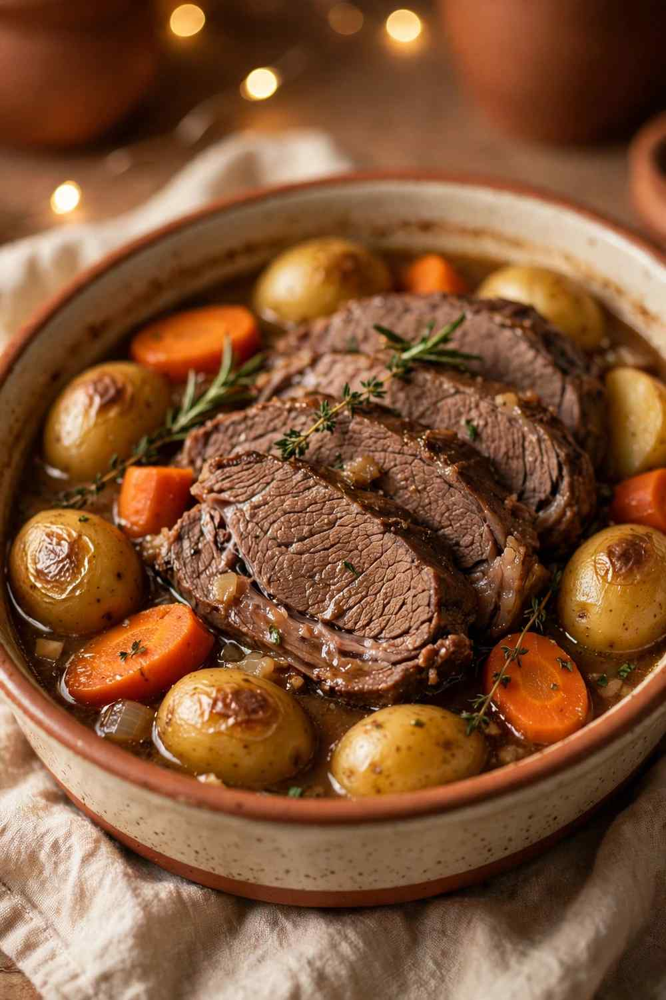
A chuck roast cooks low and slow with carrots, potatoes, onion, beef broth, tomato paste, and rosemary until it slices tender and juicy. The vegetables soak up the rich broth, and the whole pot fills the house with a warm, savory smell. It is the easiest celebration main, ready when the evening begins.
Ingredients
- 1 chuck roast (3 lbs)
- 4 carrots
- 4 potatoes
- 1 onion
- 2 cups beef broth
- 2 tbsp tomato paste
- 1 tbsp rosemary
Directions
- Peel the carrots and potatoes and cut them into large chunks. Chop the onion.
- Season the chuck roast with salt and pepper. Heat a large skillet over medium-high heat and brown the roast for 4 to 5 minutes per side, until deeply browned.
- Place the carrots, potatoes, and onion in the bottom of a slow cooker.
- Stir the beef broth, tomato paste, and rosemary together until the tomato paste is dissolved.
- Set the browned roast on top of the vegetables and pour the broth mixture evenly over it.
- Cover and cook on low for 8 hours, until the beef is very tender and easily pierced with a fork.
- Lift the roast out, slice it thickly, and serve with the vegetables and spoonfuls of the rich broth.
Food safety: cook the beef to at least 145°F (63°C) — pot roast is done when tender.
19. Lobster Tails with Garlic Butter
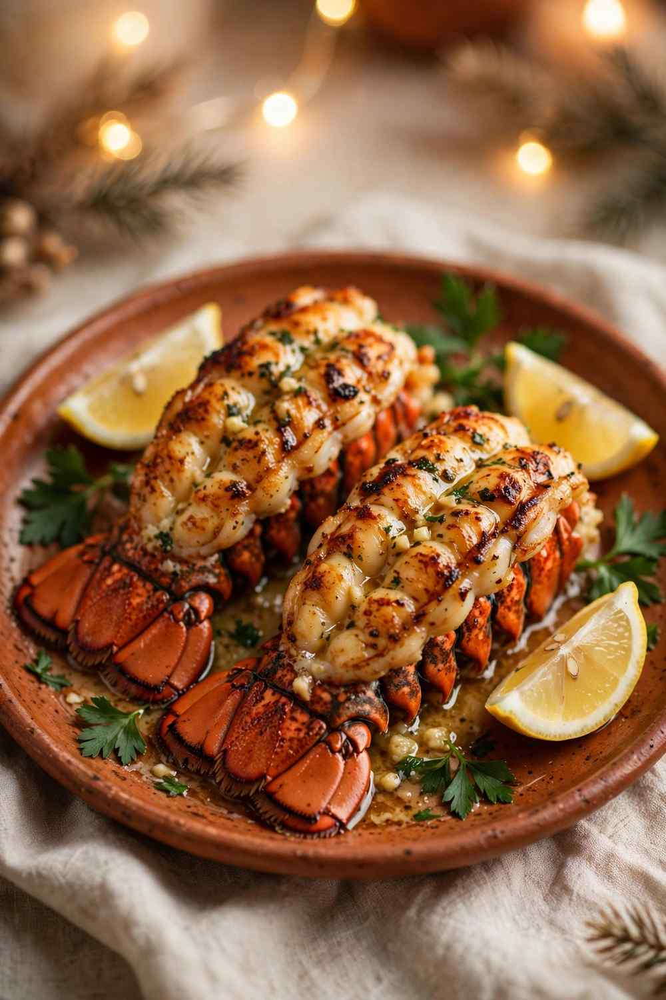
Lobster tails broil under a rich garlic butter with lemon and paprika until the meat turns pearly, tender, and sweet. Brushed with the warm butter and finished with parsley, they look and taste luxurious on the plate. They are the special-occasion main that makes midnight feel like a celebration.
Ingredients
- 4 lobster tails
- 4 tbsp butter
- 3 garlic cloves
- 1 tbsp lemon juice
- 1 tsp paprika
- chopped parsley
Directions
- Preheat the broiler and position a rack about 6 inches from the heat. Use kitchen shears to split the top of each lobster shell lengthwise.
- Gently lift the lobster meat up through the split shell so it rests on top, keeping it attached at the tail end.
- Finely chop the garlic. Melt the butter in a small saucepan over medium heat, then stir in the garlic, lemon juice, and paprika. Cook for about 30 seconds, until fragrant.
- Place the lobster tails on a baking sheet and brush them generously with the garlic butter.
- Broil for 8 minutes, until the flesh is opaque and the tops are lightly browned.
- Brush the tails once more with the remaining garlic butter, sprinkle with parsley, and serve at once.
Food safety: cook the lobster until the flesh is pearly and opaque.
20. One-Pan Garlic Butter Steak Bites
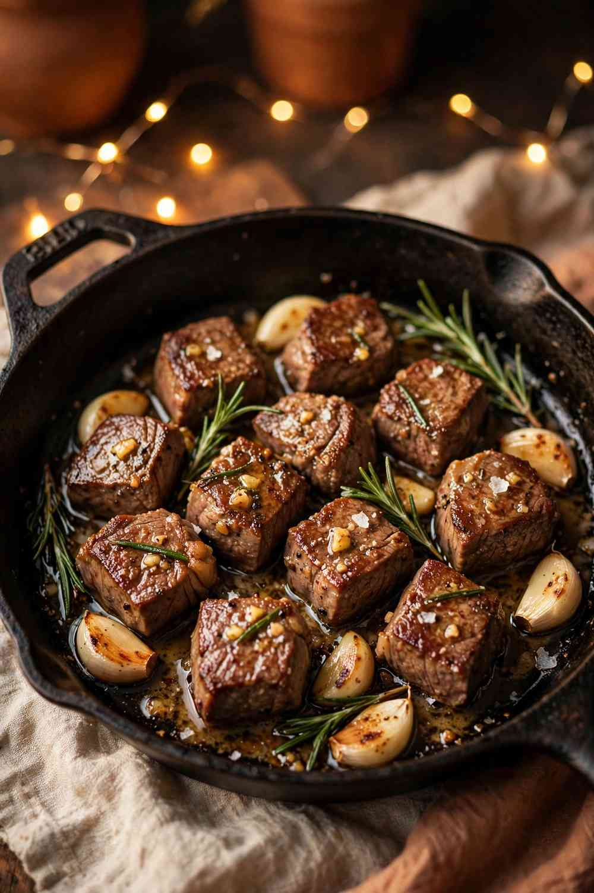
Cubes of sirloin sear in a hot pan until browned and crisp at the edges, then get tossed in foaming garlic butter with rosemary. They are juicy inside, richly savory, and ready in minutes. Set the skillet on the table and let everyone pick at them as the countdown begins.
Ingredients
- 2 lbs sirloin steak
- 3 tbsp butter
- 4 garlic cloves
- 1 tsp rosemary
- 1 tbsp olive oil
- salt and pepper
Directions
- Cut the sirloin into 1-inch cubes and pat them dry. Season generously with salt and pepper.
- Finely chop the garlic and set the rosemary nearby.
- Heat the olive oil in a large cast iron skillet over medium-high heat until it shimmers.
- Add the steak cubes in batches, in a single layer without crowding the pan, and sear for 2 to 3 minutes per side, until browned. Remove each batch to a plate.
- Reduce the heat to medium and add the butter. When it foams, add the garlic and rosemary and cook for about 30 seconds, until fragrant.
- Return all the steak bites to the skillet and toss in the garlic butter for 1 minute, until coated and warmed through.
- Serve warm, straight from the skillet, spooning the garlic butter over the top.
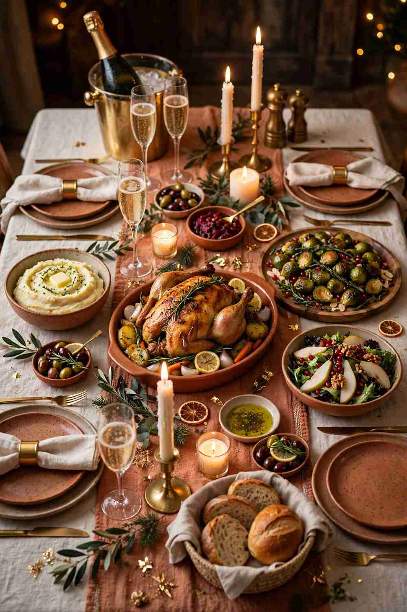
Make-ahead & serving tips
Start the slow cooker mains in the morning so the evening is free. Roasts should rest before slicing — 15 to 20 minutes for a prime rib or chicken, 3 minutes for tenderloin — so the juices stay in the meat. Assemble the Beef Wellington and the baked ziti earlier in the day and bake them when guests arrive. Keep pasta warm in a covered dish with a splash of cream, and set out the sauces and garnishes so everyone finishes their own plate. Most of these mains keep well: store leftovers covered in the fridge for up to 3 days, and reheat gently in the oven or microwave.
Related articles
More roundups from the same table:
- 25+ Easy New Year's Eve Appetizers for a Crowd — start the evening with 25+ easy appetizers for a crowd — dips, bites, cheese boards and warm starters.
- 25+ Christmas Side Dishes for Your Holiday Table — roasted vegetables, creamy potatoes, stuffing and cranberry sauce.
- 35+ Easy Christmas Appetizers for a Crowd — dips, bites, cheese boards and warm starters for your holiday party.
- 20+ Christmas Air Fryer Recipes for Easy Holiday Cooking — crispy appetizers, roasted vegetables and festive desserts.
Keep exploring
- Browse the Lunch & Dinner roundups — mains for midday and evening tables.
- Browse all six categories — breakfast, lunch and dinner, desserts, air fryer, healthy recipes, and appetizers.
- More about the kitchen — what The Tasty Recipe Co is and how it works.
About The Tasty Recipe Co: Learn how we research, organize and review our food collections — see our About Us and Editorial Policy pages.
Recipe results can vary with ingredients, equipment, and technique. See our Disclaimer for food-safety and allergy notes.